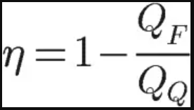

Existem quatro Leis da Termodinâmica: Lei Zero (associada ao conceito de temperatura), Primeira Lei (relacionada ao conceito de energia), Segunda Lei (associada ao conceito de entropia) e a Terceira Lei (relacionada ao limite constante da entropia quando a temperatura Kelvin se aproxima de zero).
Lei Zero da Termodinâmica: A Lei Zero indica as condições para o equilíbrio térmico. Essa lei afirma que se dois corpos A e B estão separadamente em equilíbrio térmico com um terceiro corpo C, então A e B estão em equilíbrio térmico entre si. Desse modo, quando dois corpos com temperaturas diferentes entram em contato, o corpo que estiver mais quente transfere calor para o que estiver mais frio. Assim, as temperaturas de ambos se igualam fazendo com que ocorra o equilíbrio térmico. Além disso, permite a definição de uma escala de temperatura em Celsius, Fahrenheit, Kelvin, Réaumur, Rankine, Newton e Leiden. De acordo com essa lei, entre as condições para o equilíbrios térmico está a influência dos materiais que tornam a condutividade térmica maior ou menor.
Primeira Lei da Termodinâmica: É uma das Leis da Termodinâmica mais conhecida. Foi desenvolvida por James P. Joule, afirma que é possível elevar a temperatura de um sistema pela adição de calor (energia térmica), mas também efetuando-se trabalho sobre ele. Ele realizou uma experiência em que consistia na suspensão de dois corpos pesados, por meio da carretilha, e depois liberá-la. Os corpos, atraídos pela terra, caíam, fazendo a carretilha girar. Esse movimento se transmitia à haste metálica e dessa maneira as pás giravam no interior da água. Como consequência do movimento das pás a temperatura do líquido se elevava, o que era indicado pelo termômetro.
Segunda Lei da Termodinâmica: Desenvolvida por Rudolf Clausius, a Segunda Lei estabelece condições para que as transformações termodinâmicas ocorram. Ela diz que para um sistema realizar conversões de calor em trabalho, ele precisa realizar ciclos entres fontes de calor quente e fria de forma sucessiva. Assim, ocorre a transformação de calor em trabalho por um processo cíclico. Essa lei se baseia nos enunciados: • Enunciado de Kelvin: é impossível a construção de uma máquina que, operando em um ciclo termodinâmico, converta toda a quantidade de calor recebido em trabalho; • Enunciado de Clausius: o calor não pode fluir, de forma espontânea, de um corpo de temperatura menor, para um outro corpo de temperatura mais alta; • Enunciado pela Entropia: essa lei também se baseia no conceito de entropia (é a medida de grau de desordem de um sistema). A entropia de um sistema isolado não se altera, pois esse sistema não troca energia e nem matéria com a vizinhança.
Terceira Lei da Termodinâmica: A terceira lei diz que, quando um sistema se aproxima da temperatura do zero absoluto, cessam todos os processos, e a entropia assume um valor mínimo. Essa lei surgiu dos estudos de MX Planck e Walther Nernst, que mesmo trabalhando de forma distinta, tentaram estabelecer princípios físicos que se tornassem a terceira lei da termodinâmica. Isso ocorreu durante os anos de 1906 e 1912, depois de já haver amplo conhecimento das duas primeiras leis.
Máquinas térmicas são dispositivos capazes de transformar energia térmica em trabalho mecânico. Toda máquina térmica necessita de uma fonte de calor e de uma substância de trabalho capaz de ter o seu volume modificado e, consequentemente, movimentar algum mecanismo, como válvulas ou pistões.
Os motores de combustão interna, como aqueles que movem os automóveis atuais, são exemplos de máquinas térmicas. Eles absorvem o calor que é produzido a partir da queima de uma mistura de combustível e ar, que é periodicamente injetada no interior de seus cilindros.
Ciclo termodinâmico das máquinas térmicas Ciclo termodinâmico: é a sequência de estados que a substância de trabalho da máquina térmica passa a fim de que a máquina opere corretamente, convertendo calor em trabalho. Esse ciclo é geralmente representado na forma de um gráfico de P x V (pressão em função do volume). Além disso, o sentido das setas indica se o ciclo é relacionado a uma máquina térmica ou a um refrigerador, caso sejam representadas, respectivamente, no sentido horário e anti-horário.
Ciclo de Carnot O ciclo de Carnot: é um ciclo termodinâmico ideal cujo funcionamento apresenta o maior rendimento possível, dadas duas temperaturas de funcionamento (da fonte quente e da fonte fria). Dessa maneira, é esperado que uma máquina térmica real, como o motor de um carro, apresente um ciclo de formato mais próximo possível ao ciclo de Carnot.
Rendimento das máquinas térmicas: O rendimento das máquinas térmicas é sempre inferior a 100%, como já dissemos. Tal rendimento diz respeito à porcentagem da energia absorvida pela máquina que é convertida em calor ao longo de um ciclo completo. O cálculo do rendimento, feito em porcentagem, pode ser realizado se conhecemos parâmetros como a quantidade de calor “quente” (que é absorvida pela máquina a partir da fonte quente) e a quantidade de calor “frio” (cedido pela máquina à fonte fria).
A fórmula para calcular o rendimento das máquinas térmicas é a seguinte:

A fórmula do rendimento também pode ser escrita em termos do trabalho realizado pela máquina. Nesse caso, o rendimento é calculado pela razão entre o trabalho e a quantidade de calor absorvida pela máquina.